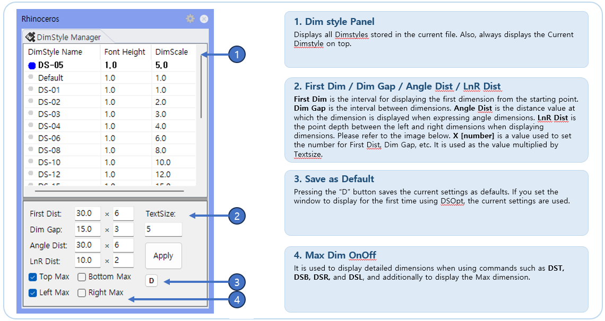
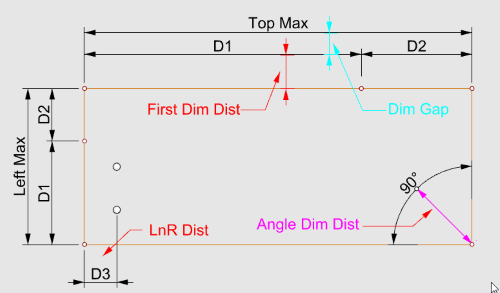

DsOpt
A command to open a panel for setting Dimension Style and RCW dimension options. Manages the current Rhino DimStyle selection and spacing for DST, DSR, DSB, DSL dimension generation.
Used to preset the first dimension distance, dimension spacing, and whether to display maximum dimensions by direction for automatic dimension commands. It is an option panel that determines the quality of dimension placement for DST/DSR/DSL/DSB.
DsOpt in the Rhino command line.First Dist, Dim Gap, Angle Dist, LnR Dist, and Max options to match your working conditions.DST, DSR, DSB, DSL and fabrication drawing dimension creation.

| Item | Description |
|---|---|
| DimStyle Selection | Double-click in the list to select the Dimension Style of the current document. |
| First Dist | Distance of the first dimension line created by DST/DSR/DSB/DSL. |
| Dim Gap | Spacing between additional dimension lines such as Max dimensions and the first dimension line. |
| Angle Dist | Distance option used when creating Angle dimensions. |
| LnR Dist | Distance option used for Left/Right direction dimensions or related dimension layout. |
| Top/Left/Right/Bottom Max | Determines whether to additionally create overall Max Dimension for each direction. |
| Command | Description |
|---|---|
DST, DSR, DSB, DSL | Uses distance and Max options when creating automatic Linear Dimensions based on Dim_Points. |
FDwg | Used for Frame fabrication drawing dimension creation. |
Gsfd | Used for Glass fabrication drawing dimension creation. |
Bpfd | Used for BackPanel fabrication drawing dimension creation. |
Font Height × DimensionScale. Dimension Text is affected by the current DimStyle.First Dist, Dim Gap, and directional Max options set here are directly reflected in the automatic dimension generation positions for DST/DSR/DSL/DSB.DimStyle. Because that name collided with Rhino's own DimStyle command (Document Properties > Annotation Styles), it has been consolidated into DsOpt. Typing DimStyle now runs Rhino's built-in command.